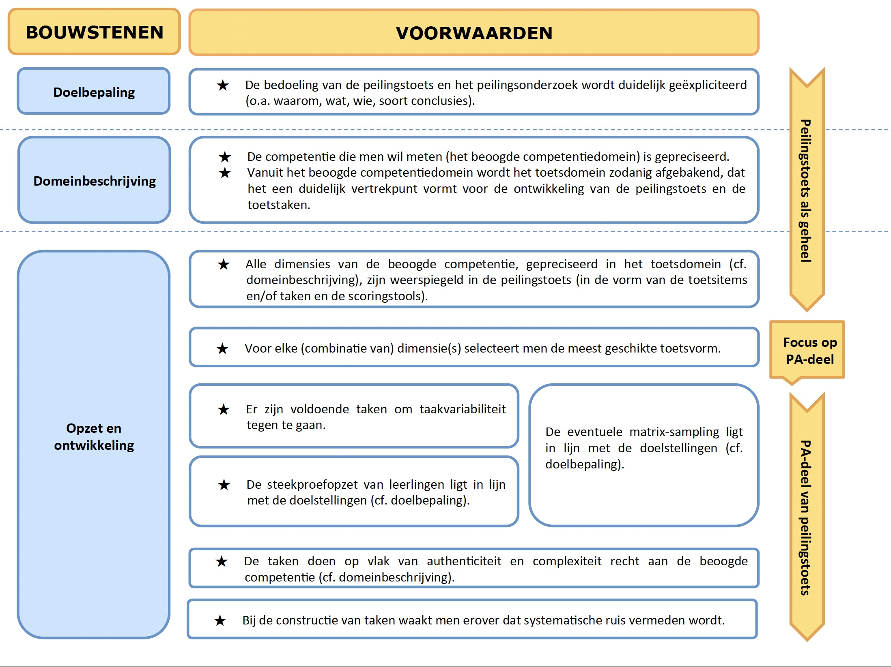
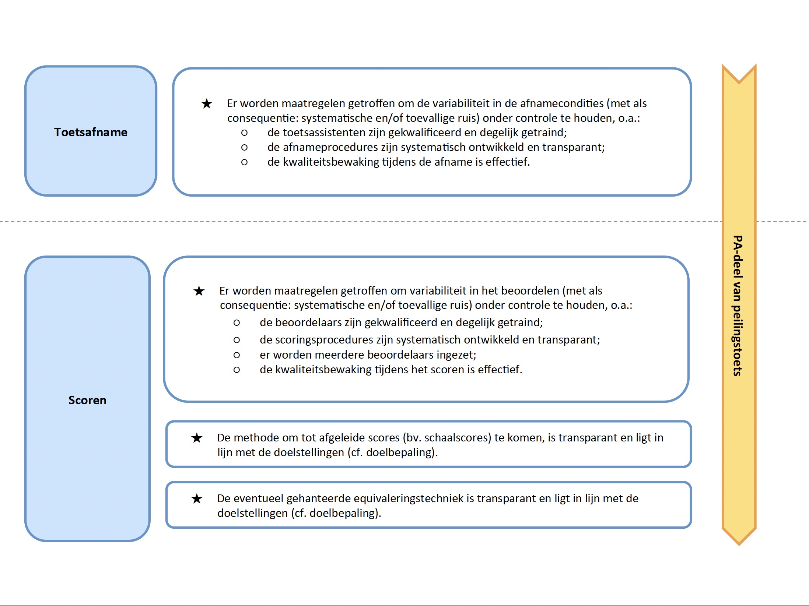
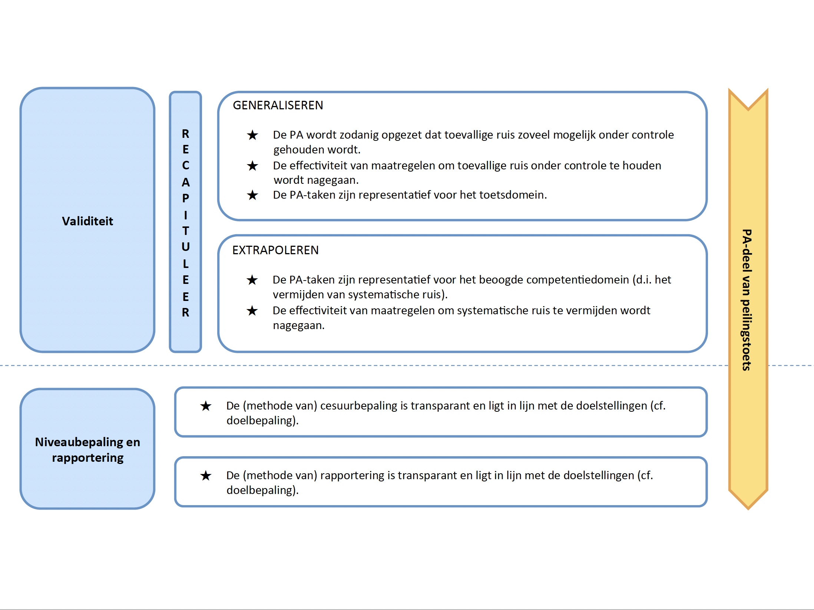
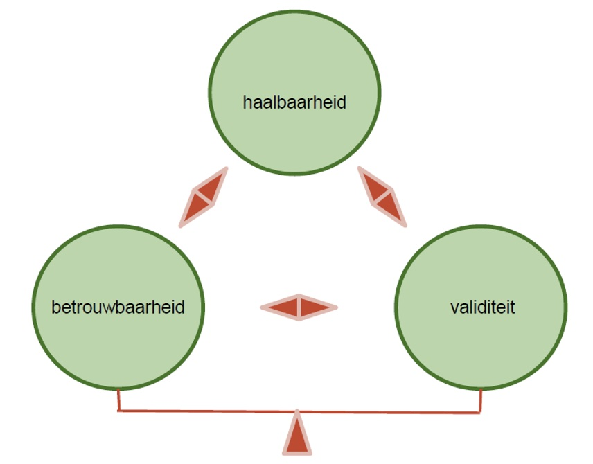

5 Evaluatiematrix
Het theoretisch kader, de literatuurstudie en de praktijkvoorbeelden gaven invulling aan de ontwikkeling van de evaluatiematrix. Op basis van deze matrix kunnen toetsprogramma’s die competenties toetsen op grond van ‘performance assessment’-technieken, op kwalitatieve wijze opgezet worden en/of op hun kwaliteit getoetst worden. In dit hoofdstuk stellen we de verschillende bouwstenen van de matrix voor. We bespreken de voorwaarden waar grootschalige competentietoetsen aan dienen te voldoen om kwaliteitsvol te zijn. We geven hierbij ook enkele aanwijzingen voor verdere lectuur. Om de voorwaarden te illustreren en bouwstenen te concretriseren, verwijzen we bovendien naar de praktijkvoorbeelden die we in hoofdstuk 4 voorstelden.
5.1 Structuur van de matrix
De evaluatiematrix (zie Figuur 5.1, Figuur 5.2 en Figuur 5.3) omvat zeven bouwstenen, met daaraan telkens één of meerdere voorwaarden gekoppeld. De matrix geeft globaal en per bouwsteen aan, aan welke voorwaarden of kwaliteitseisen een toets dient te voldoen teneinde (1) de bouwstenen zo kwaliteitsvol mogelijk te kunnen neerzetten en (2) op grond van de scores, zo valide mogelijke uitspraken te kunnen doen over het competentiepeil van groepen (leerlingen) op systeemniveau.
We volgen de argumentatieve benadering van validiteit (zie hoofdstuk 3) in de zin dat alle verschillende bouwstenen belangrijk zijn in het valideren van (interpretatie en gebruik van) toetsscores. Met het model willen we de afweging beklemtonen die gemaakt moet worden tussen wat de meest kwaliteitsvolle oplossing is, respectievelijk in termen van betrouwbaarheid (generaliseerbaarheid), validiteit (extrapoleerbaarheid) en haalbaarheid, geconcretiseerd in tijd en middelen. Door het expliciteren van de voorwaarden met betrekking tot elke bouwsteen, bouwen we conform het gedachtegoed van Kane een interpretatief- en gebruiksargument op.
Daarnaast volgen we ook duidelijk een toetsdesign-insteek; de matrix volgt de logische stappen van het op- en uitzetten van toetsen (al of niet in het kader van een ruimer toetsprogramma). De oranje pijl aan de rechterzijde van de matrix in bijlage geeft deze standaardafwikkeling weer. Het startpunt vormt de toets als geheel. Pas nadat de bedoeling van de toets duidelijk werd geëxpliciteerd, de beoogde competentie werd gepreciseerd en het toetsdomein werd afgebakend, kristalliseren de voorwaarden zich expliciet en gericht rondom het ‘performance assessment’-gedeelte van de toets. De selectie van de meest geschikte toetsvorm hangt immers af van de (dimensies van de) competentie die men wil meten.
De zeven bouwstenen zijn als volgt benoemd:
- doelbepaling (1 voorwaarde)
- domeinbeschrijving (2 voorwaarden)
- opzet en ontwikkeling (7 voorwaarden)
- toetsafname (1 voorwaarde)
- scoren (3 voorwaarden)
- validiteit (recapitulatie van 5 voorwaarden)
- niveaubepaling en rapportering (2 voorwaarden)



De bouwsteen ‘doelbepaling’ staat voor het expliciteren van onder meer het waarom, het wat, het wie en het type conclusies en resultaten van het toetssysteem (of –programma) en de toets. In de domeinbeschrijving draait alles rond het gepreciseerd krijgen van de competentie die men wil meten, inclusief het afbakenen van het toetsdomein vanuit het beoogde competentiedomein. De bouwsteen ‘opzet en ontwikkeling’ is ruim. Hij omvat, vertrekkend vanuit het toetsdomein, aspecten als taakconstructie (met aandacht voor onder meer authenticiteit), uitwerking van de scoringstool, toetscompilatie en steekproefopzet (van leerlingen en taken). Na de opzet en ontwikkeling volgt standaard de fase van de toetsafname. De focus van deze bouwsteen ligt op het controleren van variabiliteit in de afnamecondities. Ook de volgende bouwsteen, ‘scoren’, concentreert zich op potentiële variabiliteit, maar dan met betrekking tot het beoordelingsproces. In deze bouwsteen gaat het voorts ook om het bepalen van afgeleide scores en eventueel ook het equivaleren van de sores. Dit houdt ook in dat gekeken wordt naar de transparantie en doelgerichtheid van de methodes die voor het schalen en equivaleren gehanteerd worden. De bouwsteen ‘validiteit’, die zowel ‘generaliseren’ als ‘extrapoleren’ omvat, heeft een speciaal karakter in die zin dat hij oproept afstand te nemen en bewust te overlopen of wel voldaan werd aan alle voorwaarden om de scores te kunnen generaliseren naar het toetsdomein en vervolgens te extrapoleren naar het beoogde competentiedomein. De voorwaarden in deze bouwsteen concentreren zich met name op het controleren van systematische en toevallige ruis. Hierbij worden ook gekeken naar de effectiviteit van maatregelen om dit onder controle te houden en de representativiteit van de taken ten overstaan van het toetsdomein en het beoogde competentiedomein. De laatste bouwsteen in de matrix ten slotte, omvat het vastleggen van de prestatiestandaarden waartegen toetsscores worden afgezet en het rapporteren van de toetsscores zelf. Even belangrijk is dat elk van deze bouwstenen geflankeerd wordt door de ‘haalbaarheidsvoorwaarde’: kwaliteitsvolle oplossingen kunnen enkel worden geïmplementeerd indien ze ook haalbaar zijn in termen van tijd en middelen.
5.2 Matrix: bouwstenen en voorwaarden
Binnen elke bouwsteen worden in onderstaande tekst een aantal voorwaarden geformuleerd waaraan moet worden voldaan om grootschalige competentietoetsen op basis van ‘performance assessment’ kwaliteitsvol uit te bouwen. Tekstvakken in de alinea verwijzen naar verdere lectuur in verband met bepaalde voorwaarden. Daarnaast zijn er ook kaders die bedoeld zijn als illustratie van bepaalde voorwaarden, uitdagingen en/of alternatieve oplossingen, aan de hand van buitenlandse praktijkvoorbeelden. Omwille van de vertrouwelijke aard van sommige van de gegevens die we via interviews verkregen, blijven we bij sommige van deze praktijkillustraties op de vlakte over de concrete casus waarover het gaat. We namen in onderstaande tekst de volgende symbolen op om de leesbaarheid te verbeteren:
📖 Verwijzing naar literatuur
Telkens we expliciet verwijzen naar de literatuur om keuzes te onderbouwen, schrijven we dit weg in dit type van tekstvak.
💡 Verwijzing naar een illustratie
Inzichten en illustraties uit de praktijkvoorbeelden worden weergegeven in dit type tekstvak.
5.2.1 Bouwsteen ‘Doelbepaling’
De eerste bouwsteen focust op het expliciet maken waarom men een toets wil opzetten, welke competentie men - bij wie - beoogt te meten en welke soort conclusies men wil trekken in de fase van de rapportering.
Voorwaarde 1: De bedoeling van het toetsprogramma en/of de toets wordt duidelijk geëxpliciteerd (o.a. waarom, wat, wie, beoogde conclusies).
Een kwaliteitsvolle toets ontwikkelen begint met een gestructureerde doelbepaling. Verschillende deelcomponenten komen hier aan bod: waarom gaan we een toets(programma) opzetten, wat willen we op grond daarvan meten (en bij wie), en welke conclusies willen we daaruit kunnen trekken (onder welke vorm)? Keuzes met betrekking tot elk van deze deelcomponenten beïnvloeden elkaar wederzijds. Bovendien hebben ze ook gevolgen voor wat betreft de verdere ontwikkeling van de toets. Een kwaliteitsvolle doelbepaling is met andere woorden cruciaal, omdat ze sturend is voor elk van de bouwstenen die erop volgen. Beslissingen met betrekking tot elk van de volgende bouwstenen moeten dus in lijn liggen met de doelstellingen die in de doelbepaling geëxpliciteerd werden.
We onderscheiden vier centrale antwoorden die cruciaal zijn opdat een doelbepaling een adequaat vertrekpunt vormt voor de rest van de toets, met name een antwoord op:
- de waarom-vraag
- de wat-vraag
- de wie-vraag
- de vraag naar het type conclusies/de vorm van de resultaten
De waarom-vraag staat centraal in de doelbepaling (‘waarom willen we toetsen?’) en schetst welke de vragen zijn waarop men door middel van de toets een antwoord wil krijgen. Wat betreft de toetsen die wij analyseerden, is het doel of de functie evident: men beoogt kwaliteitsbewaking, en dit op het niveau van het onderwijssysteem. Andere denkbare richtvragen zijn bijvoorbeeld of de toets formatieve of summatieve doeleinden heeft; of de toets opgezet wordt vanuit een typisch ontwikkelings- of een verantwoordingsperspectief; of men op basis van de toets individuele leerlingen beoogt te selecteren, dan wel diploma’s of getuigschriften dient uit te reiken.
Toetsprogramma’s en toetsen kunnen overigens multipele doelen dienen. Grootschalige toetsen vergen een aanzienlijke inspanning in termen van tijd en middelen, wat leidt tot de logische overweging of met één toets niet verschillende vragen beantwoord kunnen worden. Bij toetsen die een hybride doelbepaling hebben, is wel waakzaamheid geboden, net omdat aan deze uiteenlopende doelstellingen andere kwaliteitsvereisten voor het opstellen van de toets gekoppeld kunnen zijn, dan wel sterker of minder sterk kunnen doorwegen.
De wat-vraag (‘wat willen we toetsen?’) heeft als doel om in algemene termen te duiden welk(e) construct, competentie, inhoudsdomein, leerdoel men in kaart wil brengen. De eigenlijke precisering en concretisering van de competentie die men wil meten hoort thuis in de fase van de domeinbeschrijving (zie bouwsteen ‘Domeinbeschrijving’).
Gekoppeld aan de wat-vraag stelt zich meteen ook de wie-vraag (‘bij wie willen we dit toetsen?’): wie maakt deel uit van de doelpopulatie? Zijn dit bv. leerlingen basisonderwijs of secundair onderwijs? Of specifieker: leerlingen aan de start, in het midden of aan het einde van hun schoolloopbaan in het basisonderwijs of secundair onderwijs?
Bovenstaande vragen zijn op hun beurt gelinkt aan de vraag welk type conclusies men wil trekken uit de resultaten en scores en in welke vorm er gerapporteerd dient te worden. In dit verband duikt bijvoorbeeld de vraag op of alle gemeten dimensies van het construct/de competentie op één schaal moeten worden gezet, dan wel of er, voor een aantal subdimensies, via aparte schalen zal worden gerapporteerd. Waar ook over nagedacht dient te worden, is de eventuele wens om resultaten te vergelijken. Mogelijk moeten de scores van een welbepaald afnamejaar worden vergeleken met een ander afnamejaar, of dienen prestaties van leerlingen van een bepaald leerjaar gelinkt te worden aan die van een ander leerjaar. In vele toetssystemen of - programma’s is er bovendien de vereiste dat prestaties van deelgroepen met elkaar worden vergeleken (bv. op basis van gender, sociaal-economische status, deelstaat, enz.). Ook kan het een expliciete vereiste zijn dat de toetsscores na afloop teruggekoppeld worden (op school- of zelfs op leerlingenniveau) aan de scholen die hebben deelgenomen. In verband met het type conclusies dat men wil trekken en de vorm van de resultaten, dient men zich ten slotte ook te buigen over de vraag hoe scores ‘betekenisvol’ kunnen worden gemaakt voor het lezerspubliek. In dit verband duiken keuzes op zoals bv. een focus op criteriumgerefereerd beoordelen, wat doorgaans het gebruik van prestatiestandaarden impliceert, of andere manieren om scores betekenisvol te maken, zoals via voorbeeldtaken die representatief zijn voor verschillende punten of locaties op de gehanteerde schaal (zie ook bouwsteen ‘Niveaubepaling en rapportering’).
📖 Zie National Research Council (2014, 134) voor een illustratie van welke vragen typisch gesteld worden in het kader van grootschalige toetsen gericht op kwaliteitsbewaking.
5.2.2 Domeinbeschrijving
In deze bouwsteen wordt het beoogde competentiedomein nader uitgewerkt. Vanuit het competentiedomein worden vervolgens de te toetsen dimensies (het ‘toetsdomein’) afgebakend.
Voorwaarde 2: De competentie die men wil meten (het beoogde competentiedomein) is gepreciseerd.
Zeker bij het in kaart brengen van competenties geldt dat het beoogde competentiedomein vaak breed en moeilijk scherp af te lijnen of precies te specificeren is (bv. ‘geletterdheid’, ‘creativiteit’, ‘zelfsturing’). Toch dient men in de domeinbeschrijving duidelijk te beschrijven wat er precies met het beoogde construct of de beoogde competentie wordt bedoeld en welke verschillende dimensies er deel van uitmaken. Hiervoor kan men een beroep doen op inhoudsexperten en gebruik maken van wetenschappelijke inzichten.
💡 In het kader van Periodieke Peiling van het Onderwijsniveau (PPON) – Schrijfvaardigheid (zie 4.3.) vormden de wettelijke vereisten (Kerndoelen enerzijds en Tussendoelen en Leerlijnen anderzijds) het vertrekpunt voor het conceptualiseren van het begrip ‘schrijfvaardigheid’. De kerndoelen bieden vaak echter onvoldoende handvaten voor het construeren van peilingsonderzoek. Tegen die achtergrond maakt Cito voor elke peiling een domeinbeschrijving, die als basis dient voor het peilingsontwerp en de bijhorende instrumentontwikkeling. Een dergelijke domeinbeschrijving legt bijvoorbeeld de didactisch betekenisvolle eenheden vast en beschrijft die vervolgens ook. In de publicatie Balans van de schrijfvaardigheid in het basis- en speciaal basisonderwijs is voor PPON-‘Schrijfvaardigheid’ (2009) zo’n domeinbeschrijving opgenomen. De domeinbeschrijving is onder meer gebaseerd op wetenschappelijke inzichten en analyse van veel gebruikte methoden en bijgesteld op basis van het commentaar van vakinhoudelijke deskundigen, leerkrachten en geïnteresseerde leken.
Voorwaarde 3: Vanuit het beoogde competentiedomein wordt het toetsdomein zodanig afgebakend, dat het een duidelijk vertrekpunt vormt voor de ontwikkeling van de toets en de toetstaken.
Bij het afbakenen van het toetsdomein is het belangrijk erover te waken dat het toetsdomein het beoogde competentiedomein weerspiegelt, onder meer in termen van inhoud en cognitieve complexiteit. Men dient op transparante wijze duidelijk te maken welke dimensies wel en welke dimensies niet worden meegenomen in het toetsdomein en op basis van welke argumenten dit gebeurt.
Vanuit het beoogde competentiedomein bakent men dus het toetsdomein af. De systematische omschrijving van dit toetsdomein gebeurt in het toetsraamwerk, ook wel toetsspecificaties of blauwdruk genoemd. Deze systematische omschrijving is noodzakelijk om ervoor te zorgen dat de taken die ontwikkeld zullen worden, het beoogde construct of de beoogde competentie goed vertegenwoordigen.
💡 Een systematische afbakening van het toetsdomein vormt een noodzakelijk vertrekpunt voor de toetsconstructie. Wanneer het beoogde competentiedomein daarbij ‘vernauwt’, heeft dit vanzelfsprekend gevolgen voor de (validiteit van de) interpretatie van de scores. Dat dit een evenwichtsoefening blijft die niet te ver kan worden doorgedreven, wordt geïllustreerd door het voorbeeld van National Assessment Program – Literacy and Numeracy (NAPLAN) - ‘Persuasive Writing’ (zie 4.1.). Om schrijfvaardigheid te toetsen, werd een toets opgezet rond één genre (‘overtuigend schrijven’); het brede domein ‘schrijfvaardigheid’ werd in het toetsraamwerk van NAPLAN met andere woorden ingeperkt. Dit had als gevolg dat de prestaties van de leerlingen op de taak minder representatief waren voor het beoogde competentiedomein, nl. schrijfvaardigheid in het algemeen.
Het is cruciaal dat de domeinbeschrijving en het toetsraamwerk gedetailleerd en transparant zijn, zeker bij toetsen die competenties beogen te meten via ‘performance assessment’. Het toetsraamwerk omvat steeds de inhoud en de aard van de cognitieve processen die beoordeeld moeten worden. Daarnaast vinden we in het toetsraamwerk ook de psychometrische eigenschappen van de taken en relevante informatie voor de afname (bv. instructies, voorziene tijd, al of niet keuzemogelijkheid wat de opdracht betreft, gebruik van materialen, …) terug.
📖 Zie Suzanne Lane and Stone (2006) voor meer informatie over de inhoud van toetsraamwerken.
Documenten die als uitgangspunt gebruikt worden voor de domeinbeschrijving en het toetsraamwerk (bv. nationale curricula en standaarden) bieden vaak onvoldoende houvast. Zulke documenten limiteren of prioritiseren niet, wat bij een toetsraamwerk wel het geval hoort te zijn. Daarom dienen andere bronnen te worden geconsulteerd, zoals bijvoorbeeld wetenschappelijke inzichten met betrekking tot de beoogde competentie of toetsraamwerken uit het buitenland. Het is ook interessant experten te betrekken in dit proces; zij kunnen uit deze documenten de meest relevante elementen selecteren, wat bijdraagt tot een degelijke domeinbeschrijving en een uitgewerkt toetsraamwerk.
💡 Het domein ‘Technology and Engineering Literacy’ (TEL) van National Assessment of Educational Progress (NAEP) is crosscurriculair (zie 4.6.3.). Bovendien is het een nieuw te toetsen domein, wat betekent dat NAEP zich niet kon baseren op bestaande toetsraamwerken. Ze maakten gebruik van heel uiteenlopende documenten, zoals bestaande eindtermen inzake technologie uit de deelstaten, invloedrijke technologiestandaarden uit andere landen, het NAEP-toetsraamwerk voor Wetenschappen, documenten van belangenorganisaties en onderzoeksrapporten. Met het oog op de uitwerking van de domeinbeschrijving en het toetsraamwerk, betrokken zij experten vanuit heel diverse inhoudsdomeinen en sectoren: (1) vertegenwoordigers uit scholen, het bedrijfsleven en de ingenieurswetenschappen; (2) internet-, toets- en onderwijsexperten, en experten op vlak van wetenschapsonderwijs en ‘21st century skills’.
5.2.3 Opzet en ontwikkeling
Na de bepaling van het toetsdomein staat in de volgende bouwsteen de ontwikkeling van de toets centraal. Cruciale elementen zijn onder andere de taakconstructie (met aandacht voor authenticiteit), de uitwerking van de scoringstools, de toetscompilatie en de opzet van de steekproef (van zowel leerlingen als taken). Deze bouwsteen omvat in totaal zeven voorwaarden.
Voorwaarde 4: Alle dimensies van de beoogde competentie, gepreciseerd in het toetsdomein, zijn weerspiegeld in de toets (in de vorm van toetsitems en/of taken en scoringstools).
De domeinbeschrijving mondt uit in de eigenlijke opzet en ontwikkeling van de toets, waarin alle dimensies van de beoogde competentie, afgebakend in het toetsdomein, weerspiegeld dienen te zijn. Indien dit niet het geval is, spreken we van onderrepresentatie van het construct. Dit impliceert dat de toets belangrijke aspecten (inhoud en/of processen) van het beoogde construct of de beoogde competentie niet vat. Het gevolg is dat de betekenis die aan de toetsscores gehecht kan worden, verengd wordt. Het tegengaan van deze ondervertegenwoordiging van het construct begint eigenlijk al in de fase van de domeinbeschrijving. Zeker bij competentietoetsen, die vaak een breed en complex domein dienen te bestrijken, is deze ondervertegenwoordiging een uitdaging.
💡 Voor de ontwikkeling van de toets, de taken en de scoringstools hanteert men in NAEP een ‘evidence centered design’. Een dergelijk design impliceert dat erg uitgebreid en in verschillende fasen getest wordt of met de taken wel gemeten wordt wat men beoogt te meten. Hierbij heeft men zowel oog voor onderrepresentatie van het construct als voor construct-irrelevante variantie (zie voorwaarde 10). Educational Testing Service (ETS) ontwikkelde eind jaren negentig het ‘evidence-centered design’ (ECD)-raamwerk. Van dit raamwerk kan men gebruik maken bij het opstellen van coherente toetsen en het in praktijk brengen van deze bewijsketen. Het ECD-raamwerk moet ervoor zorgen dat de manier waarop de toets wordt opgezet in alle fasen in lijn is met wat men beoogt te meten (zie ‘doelbepaling’). De gemeenschappelijke designarchitectuur zorgt er bovendien voor dat de manier waarop informatie verzameld en geïnterpreteerd wordt, gecoördineerd verloopt voor de verschillende partijen die bij het proces betrokken zijn (zoals taakontwikkelaars, statistici, interface-designers, enz.). Centraal in het ECD-raamwerk staan het ‘Conceptual Assessment Framework’ (CAF), dat zich vooral richt op de processen die nodig zijn om de toets systematisch te ontwikkelen enerzijds, en de ‘four-process delivery architecture’, dat zich in de eerste plaats focust op de oplevering (‘delivery’) van de toets anderzijds.
Grootschalige toetsen die ‘performance assessment’ inzetten, omvatten vaak minder taken dan klassieke toetsen items omvatten (zoals bijvoorbeeld klassieke, schriftelijke toetsen op basis van meerkeuzevragen). Daarom is het belangrijk dat voor elke taak wordt nagedacht welke dimensie(s) van het construct ze vertegenwoordigt. Wat bijdraagt aan een volledige(re) dekking van het beoogde construct, is het systematisch ontwikkelen van toetsen, taken en scoringstools. Verschillende componenten van het ontwikkelproces dienen hierbij in beschouwing genomen te worden, zoals:
- het design van het constructieproces;
- de selectie en training van de ontwikkelaars;
- de toetsconstructie zelf;
- de review door experten en de daaruit voortvloeiende noodzakelijke aanpassingen; en
- het piloot-testen van de taken en scoringstools.
📖 Suzanne Lane and Stone (2006) en Schmeiser and Welch (2006) geven een overzicht van wat een systematische ontwikkeling inhoudt.
Parallel aan de taken ontwikkelt men de scoringstools (beoordelingscriteria en –schaal). Deze tools ondersteunen een consistente toepassing van de scoringscriteria. Net als de ontwikkeling van de taken en opdrachten, is de ontwikkeling van scoringstools een iteratief proces.
Wat de beoordelingscriteria en –schaal betreft, moeten er keuzes gemaakt worden. Deze keuzes hebben betrekking op de te hanteren scoringsprocedure (analytisch of holistisch), de beoordelingscriteria en de wijze waarop die geoperationaliseerd worden en ten slotte ook het aantal punten op de beoordelingsschaal, inclusief de omschrijving van de schaalpunten of bekwaamheidsniveaus.
📖 Zie Kuhlemeier et al. (2013) voor toelichting inzake drie types schalen: normatieve schalen, descriptieve schalen of rubrics, en productschalen.
Met betrekking tot de scoringsprocedure maken Suzanne Lane and Stone (2006) het onderscheid tussen analytische en holistisch scoringstools duidelijk aan de hand van het voorbeeld van het beoordelen van een schrijfstuk. Bij een holistische beoordeling geven de beoordelaars een enkel, holistisch oordeel over de kwaliteit van het schrijfstuk. Ze kennen één score toe, waarbij ze gebruik maken van een rubric met criteria en meestal ook van papers die een illustratie vormen van het vereiste prestatieniveau voor elke score. Bij analytisch scoren beoordeelt de beoordelaar het schrijfstuk aan de hand van een aantal kenmerken, zoals bijvoorbeeld inhoud, structuur en grammatica. Er wordt een score gegeven om het niveau van elk van deze componenten weer te geven. Soms worden de verschillende criteria gewogen, waarbij criteria waarvan verondersteld wordt dat ze belangrijker zijn voor het construct dat gemeten wordt, meer bijdragen in de totaalscore dan andere. Onderzoek geeft geen eenduidig antwoord op de vraag of holistische dan wel analytische scoringstools de voorkeur genieten (Johnson, Penny, and Gordon 2009; S. Lane 2015). Er gaan stemmen op om beide aanpakken te combineren. Zo is er de optie om holistisch te scoren om een totaalscore te bekomen én analytisch te scoren om feedback te kunnen verschaffen. Deze methode brengt wel hogere kosten met zich mee. Johnson, Penny, and Gordon (2009) raden aan om de keuze te laten afhangen van de manier waarop de informatie gebruikt zal worden en de beschikbare middelen. Het advies is om holistisch te scoren bij eenvoudige prestaties, die niet meer dan één belangrijk kenmerk in kaart brengen. Analytisch scoren kan dan eerder gebruikt worden bij meer complexe prestaties, met verschillende belangrijke componenten en in het geval achteraf feedback gegeven dient te worden op eventueel deeldimensies.
Voorwaarde 5: Voor elke (combinatie van) dimensie(s) selecteert men de meest geschikte toetsvorm.
Deze volgende voorwaarde in het kader van de opzet en de ontwikkeling houdt verband met de keuze voor een geschikte toetsvorm. Het inzetten van ‘performance assessment’ bij het grootschalig toetsen van competenties dient weloverwogen te gebeuren. De evaluatiematrix vestigt duidelijk de aandacht op de vraag rond de te hanteren toetsvorm. Pas nadat de bedoeling van de toets duidelijk werd geëxpliciteerd, de beoogde competentie is verfijnd en het toetsdomein is afgebakend, kan een beargumenteerde keuze gemaakt worden met betrekking tot de te gebruiken toetsvormen.
Hoewel ‘performance assessments’ door de band genomen beter in staat zijn om complexe cognitieve processen van leerlingen in kaart te brengen en toetsen samengesteld uit meerkeuzevragen vaak beschouwd worden als vooral nuttig voor het evalueren van lagere-orde cognitieve processen, hoeft dit niet steeds het geval te zijn. Meerkeuzevragen kunnen, indien ze zorgvuldig zijn opgesteld, ook bepaalde complexe cognitieve processen vatten en niet elke ‘performance assessment’ meet sowieso meer complexe processen (Suzanne Lane and Stone 2006; National Research Council 2014). Daarenboven brengen dit soort toetsen een logistieke en financiële meerkost met zich mee. Veel tijd en (financiële) middelen zijn nodig voor o.a. de noodzakelijke hulpmiddelen voor de toets (bv. computers of labokits), de doorgedreven training van beoordelaars en het inzetten van meerdere beoordelaars. Tegen die achtergrond is het raadzaam een overwogen keuze te maken voor een welbepaalde toetsvorm en ‘performance assessment’ alleen dan in te zetten wanneer het echt een meerwaarde oplevert. Hierbij dient expliciet te worden gemaakt waarom uiteindelijk voor deze of gene toetsvorm werd geopteerd.
Het is zaak goed na te denken in welke mate en/of met betrekking tot welke dimensies van de beoogde competentie ‘performance assessment’ kan worden ingezet. De keuze om ‘performance assessment’ in te zetten impliceert met andere woorden niet dat voor korte invulvragen en/of meerkeuzevragen geen ruimte meer is. Elke toetsvorm heeft duidelijke voor- en nadelen en deze dienen te worden afgewogen tegen het doel van de toets dat eerder werd vastgelegd.
Voorwaarde 6: Er zijn voldoende taken om de implicaties van tussen-taken-variabiliteit te minimaliseren.
Deze cruciale voorwaarde houdt verband met de noodzaak om de variabiliteit, die het gevolg is van het werken met taken, te minimaliseren. De taken in ‘performance assessments’ vormen immers een belangrijke foutenbron, die de betrouwbaarheid van de toetsscores in negatieve zin kan beïnvloeden. De aard en kwaliteit van de respons van een leerling op een toets kunnen namelijk erg variëren van de ene steekproef van taken naar de andere. Deze ‘taakgerelateerde error’ heeft te maken met de unieke kenmerken van de taak en de interactie van deze kenmerken met de kennis en ervaring van de leerling (National Research Council 2014). Het heeft als gevolg dat de scores van leerlingen overheen verschillende ‘performance assessment’-taken die in principe hetzelfde zouden moeten meten, vaak niet erg consistent zijn. Dit fenomeen duiden we aan met de term ‘task sampling variability’ of tussen-takenvariabiliteit.
Bij ‘performance assessments’ is deze taakgerelateerde error typisch groter dan bij toetsen samengesteld uit meerkeuzevragen. Bovendien worden bij dit laatste type toetsen toevallige fouten uitgemiddeld op basis van de vele meerkeuzevragen die leerlingen beantwoorden. Dit is niet het geval bij ‘performance assessment’, waar het aantal taken dat bij een enkele leerling wordt afgenomen doorgaans (erg) klein is. Een mogelijke oplossing bestaat erin voldoende taken (per leerling) af te nemen en zo over deze verschillende taken heen een uitspraak te doen over hun prestatieniveau.
Grootschalige toetsen met het oog op systeemmonitoring die gebruik maken van ‘performance assessment’ dienen uit verschillende taken te bestaan, om valide en betrouwbaar te zijn. Het voorzien van voldoende taken is echter praktisch vaak niet haalbaar. Op basis van een analyse van internationale praktijkvoorbeelden en screening van empirische literatuur, identificeerden we volgende mogelijke aanpakken voor de vastgestelde problematiek:
- Het inperken van het competentiedomein naar het toetsdomein via een kwaliteitsvolle domeinbeschrijving (zie bouwsteen ‘Domeinbeschrijving’).
- Het gebruik van matrix sampling (zie verder, voorwaarde 8).
- Het inzetten van verschillende types items en taken in één toets. Door verschillende types van items en taken (bijvoorbeeld, open vragen waarbij geantwoord moet worden met een woord, meerkeuzevragen, essay-vragen, …) te combineren, laat men betrouwbaarheidskwesties die verbonden zijn aan één bepaald vraagtype (bv. de variabiliteit die wordt geïntroduceerd door het beoordelingsproces bij ‘performance assessment’ of variabiliteit die wordt geïntroduceerd doordat leerlingen het antwoord gokken bij toetsen die bestaan uit meerkeuzevragen) minder doorwegen.
💡 Bij het ‘National Assessment Program’ (NAP) – ICT Literacy (zie 4.2.) zijn alle items en taken binnen een module inhoudelijk gelinkt aan een verhaallijn. In een module bevinden zich verschillende formats (bv. meerkeuzevragen, korte antwoordvragen, taken die de inzet van een enge vaardigheid vereisen, taken die een meer complexe prestatie vereisen). Een module eindigt meestal met een grote taak, waarbij aan leerlingen wordt gevraagd om een product te creëren. Daarvoor komen er een aantal voorbereidende items en taken (zgn. ‘lead-up items’), die naar de betreffende grote taak toe leiden (ook inhoudelijk). De voorbereidende items en taken kunnen verschillende vormen aannemen: vaardigheidstaken (meestal software simulation items), ‘information-based’ items en ‘evaluation’ items, waarvoor meerkeuzevragen, vragen waarbij leerlingen elementen moeten slepen en (elders) neerzetten en korte antwoordvragen worden gebruikt.
- Het inzetten van toetsen met een grotere inbedding in de eigen (klas)context.
💡 In Nieuw-Zeeland werkte men met betrekking tot ‘National Monitoring Study of Student Achievement’ (NMSSA) - Arts (2016) voor het eerst met lokale klasleerkrachten. Hun taak was het reële competentieniveau van een steekproef leerlingen te beoordelen. Als richtlijn gold dat ze zich moesten baseren op de typische prestaties van de leerlingen doorheen het jaar. De beslissing om leerkrachten in te zetten kaderde in de overtuiging dat de eigen klasleerkracht zich in de beste positie bevindt om een oordeel te vellen over het reële prestatieniveau. Het alternatief zou zijn om de toets via een gestandaardiseerde taak af te laten nemen door een centrale toetsassistent. Gezien de verschillende te toetsen subdomeinen (dans, drama, muziek en visuele kunsten) zou dit echter praktisch niet haalbaar zijn. De werkwijze paste bovendien in een bredere strategie in Nieuw-Zeeland om de professionele kennis van leerkrachten op vlak van prestaties en vooruitgang van leerlingen, te optimaliseren en benutten. Grootschalige professionaliseringstrajecten voor leerkrachten werden opgezet met het oog op kwaliteitsvolle (formatieve) evaluaties. Merk op dat de hier beschreven werkwijze met lokale leerkrachten enkel voor het ‘performance assessment’-gedeelte van de NMSSA-Arts (2016) werd gehanteerd, en overigens ook voor het eerst in het kader van het nationale toetsprogramma.
Voorwaarde 7: De steekproefopzet van leerlingen ligt in lijn met de doelstellingen (zie doelbepaling).
Voor de steekproeftrekking van leerlingen in het kader van grootschalige toetsen met het oog op kwaliteitsmonitoring, ligt de focus op technieken voor en consequenties van ‘probability sampling’ en ‘multistage cluster sampling’.
📖 Voor meer informatie over steekproeftrekking verwijzen we naar Kish (2005) en Mazzeo and Zieky (2006).
Hierbij is het steeds belangrijk voor ogen te houden dat de steekproefopzet in lijn ligt met de doelstellingen die men eerder in de doelbepaling preciseerde.
💡 In een bepaalde casus formuleerde de opdrachtgever vrij laat in het proces de verwachting dat deelnemende scholen achteraf een schoolfeedbackrapport zouden krijgen. De projectleiding kon hier echter geen rekening meer mee houden: de steekproeven waren reeds getrokken. Het gevolg was dat de resultaten niet voldoende betrouwbaar waren voor rapportering op schoolniveau. Er zijn dus risico’s verbonden aan het gebruik van de rapporten, met name wat betreft (de validiteit van) de interpretatie van de resultaten. De bijkomende doelstelling om te rapporteren op schoolniveau lag immers niet in lijn met de initiële doelstellingen.
Voorwaarde 8: De eventuele matrix-sampling ligt in lijn met de doelstellingen (zie doelbepaling).
Wanneer we voorwaarden 6 en 7 gecombineerd in beschouwing nemen, komen we uit op de volgende voorwaarde, die betrekking heeft op de techniek van matrix-sampling. Een van de uitdagingen om toetsscores te generaliseren naar het toetsdomein, heeft te maken met het voorzien van voldoende taken. De constructen die via grootschalige competentietoetsen op basis van ‘performance assessment’ gemeten worden, bestrijken vaak een breed domein. Gecombineerd met de problematiek van de tussen-takenvariabiliteit zorgt dit ervoor dat deze toetsen een aanzienlijk aantal taken dienen te bevatten om betrouwbare en valide scores op te leveren. Dit is echter praktisch vaak niet haalbaar in termen van kosten verbonden aan de ontwikkeling van de toets en de tijd die leerlingen moeten spenderen aan de toets. Een oplossing die veel gebruikt wordt, is de techniek van matrix-sampling.
Bij matrix-sampling worden steekproeven van taken en items uit een ruimere pool afgenomen bij steekproeven leerlingen. Verschillende groepen van leerlingen krijgen met andere woorden verschillende combinaties van taken en/of items voorgelegd. Samen zeggen de prestaties van alle leerlingen op alle taken iets over de prestaties van de groep van leerlingen met betrekking tot het construct of de competentie dat/die men beoogt te meten. Om de prestaties van de leerlingen op één schaal te kunnen zetten, en dus gezamenlijk over de prestaties te kunnen rapporteren, worden ‘link items’ of ‘link taken’ voorzien. Dit zijn taken die door alle, of ten minste door een deel van de leerlingen worden uitgevoerd, en de prestaties dus aan elkaar kunnen linken. Via deze werkwijze zijn er minder taken per leerling nodig om tot betrouwbare scores op groepsniveau te komen. Matrix-sampling is met andere woorden een kostenefficiënte en technisch degelijke methode om alle dimensies van de beoogde competentie te kunnen meten.
💡 NAPLAN koos ervoor om de brede competentie ‘schrijfvaardigheid’ te verengen tot één schrijfgenre: overtuigend schrijven (zie illustratie bij tweede voorwaarde m.b.t. bouwsteen ‘domeinbeschrijving’ en ook 4.1.). Bij CITO ging men voor de PPON-schrijfvaardigheid anders te werk om hetzelfde probleem het hoofd te bieden (zoe ook 4.3.). Daar ontwikkelde men een takenpool die 12 taken omvatte en die de verscheidenheid van het domein vertegenwoordigde door verschillende teksttypes en –genres op te nemen. Vervolgens werd er via matrix-sampling voor gezorgd dat de toets qua tijdsinvestering voor de leerlingen beheersbaar bleef.
Hoewel matrix sampling effectief en efficiënt is, moet over de opzet grondig nagedacht worden. Deze techniek is immers, zeker voor toetsen die ‘performance assessment’ inzetten, niet zonder problemen. Het juiste design vinden is niet vanzelfsprekend en elke oplossing brengt steeds een aantal nieuwe uitdagingen met zich mee.
📖 Hambleton (2006) geven inzicht in een aantal van de criteria die in overweging dienen te worden genomen bij het uitwerken van het ontwerp van matrix sampling, om het hoofd te kunnen bieden aan de uitdagingen verbonden aan het inzetten van matrix sampling voor performance assessement.
Voorwaarde 9: De taken doen op vlak van authenticiteit en complexiteit recht aan de beoogde competentie (zie domeinbeschrijving).
Authenticiteit staat centraal bij ‘performance assessment’ en verwijst naar de mate waarin de toets erin slaagt de kennis en vaardigheden te reflecteren die belangrijk zijn in de alledaagse context van de leerlingen. Er wordt in dit kader ook wel van ‘fidelity’ gesproken.
Taken die plaatsvinden in authentieke, levensechte contexten zijn betekenisvol en motiverend voor leerlingen. Naarmate taken of opdrachten sterker lijken op die in de criteriumsituatie, kunnen er ook meer valide voorspellingen worden gedaan over het functioneren in de criteriumsituatie.
💡 NAP-ICTL is zodanig opgesteld dat het de typische dagdagelijkse toepassing van ICT weerspiegelt (zie 4.2.). De leerlingen voeren taken uit op computers en gebruiken software die zowel gesimuleerde als live-applicaties omvat. De toets omvat naast de software-toepassingen zowel meerkeuzevragen als open-antwoordvragen. Deze zijn gegroepeerd in negen modules, elk met een eigen uniek thema, dat de authentieke basis vormt voor het uitvoeren van de taken. Deze scenario-gebaseerde modules volgen elk een lineaire narratieve sequentie.
Met betrekking tot de criteriumsituatie stelt zich overigens de vraag of men naar het product wenst te kijken, naar het proces dat ertoe leidt of naar beide. Om representatief te zijn voor het beoogde competentiedomein of de criteriumsituatie is het belangrijk dat de omstandigheden van de observatie representatief zijn voor deze in de criteriumsituatie. Bij de opzet van een toets schrijfvaardigheden bijvoorbeeld, betekent dit dat er in principe ook ruimte moet zijn voor voorafgaande studie van de literatuur en planning en revisie achteraf.
Het is echter niet omdat ‘performance assessments’ het potentieel hebben om authentiek te zijn, dat ze dat in werkelijkheid ook zijn. Zaak is zodanig te werk te gaan, dat de taken en scoringstools die worden ontwikkeld de beoogde competentie effectief weerspiegelen en daar bewijs voor te leveren. Daarom is het belangrijk de cognitieve processen die bij leerlingen in gang gezet worden door de ‘performance assessment’-taak expliciet te maken. Verschillende methodieken kunnen hiervoor aangewend worden: protocolanalyse (ook: cognitieve interviews of ‘cognitive labs’ genoemd) , ‘analysis of reasons’ en ‘analysis-of-errors’.
📖 Zie Darling-Hammond and Adamson (2014) voor toelichting bij deze methodieken die cognitieve processen expliciteren.
💡 Bij NAEP (zie 4.6.) zien we dat ze, in het kader van hun ‘evidence-centered design’, gebruik maken van cognitieve interviews of ‘cognitive labs’ waarbij leerlingen ertoe worden aangezet om luidop te denken bij het oplossen of uitvoeren van een taak (‘think aloud’) en vervolgens ook nog geïnterviewd worden door de onderzoeker na uitvoering van de taak (bv. ‘stimulated recall’).
Voorwaarde 10: Bij de constructie van taken waakt men erover dat systematische ruis vermeden wordt.
Naast ‘onderrepresentatie van het construct’ (zie voorwaarde 4) leidt ook ‘construct-irrelevante variantie’ tot systematische ruis. Construct-irrelevante variantie (CIV) verwijst naar variantie in een score die resulteert uit iets anders dan het construct dat men beoogde te meten. De beoordeling is met andere woorden ‘te breed’; ze omvat informatie die niet relevant is voor de competentie die men beoogt te meten. Illustratief is een toets die wil peilen naar probleemoplossend vermogen, en die uitgevoerd wordt op een computer. Het onvermogen van een leerling om een bepaalde taak in dat verband af te werken, kan het resultaat zijn van het ontbreken van (voldoende) probleemoplossend vermogen, maar kan even goed het gevolg zijn van beperkte ICT-vaardigheden.
Ook buitenlandse praktijkvoorbeelden van grootschalige toetsen die gebruik maken van ‘performance assessment’ worden geconfronteerd met construct-irrelevante variantie. Wat in dit verband met name opvalt is dat de reductie van CIV een spanning kan opleveren met de keuze voor authenticiteit.
💡 In een van de praktijkvoorbeelden wou men net taken ontwikkelen die geen CIV introduceren. De organisatie was van mening dat controversiële thema’s, die interessant en uitdagend zijn voor leerlingen, wel thuishoren in de dagdagelijkse klaspraktijk, maar niet in een nationale toets. Ook wou men de potentiële invloed van voorkennis op het competentieniveau uitschakelen. Zo ontwikkelde men bijvoorbeeld geen schrijfopdrachten rond wetenschappelijk topics omdat de (wetenschappelijke) voorkennis bij leerlingen mogelijks kan verschillen. Critici vroegen zich met betrekking tot deze keuzes af hoe authentiek en engagerend een toetstaak kan zijn voor de leerlingen, indien het gekozen thema niet over iets gaat dat hen aanbelangt. Tegenover dit voorbeeld staan andere voorbeelden die levensechtheid en authenticiteit van de taken laten primeren. Zo klonk bij een van de praktijkvoorbeelden de waarschuwing dat CIV er sowieso altijd is, zeker bij scenariogebaseerde toetsen. Werken met scenario’s en levensechte contexten brengt dan weer verschillende andere uitdagingen met zich mee. Ten eerste kan deze context voor bepaalde leerlingen net boeiend zijn; andere leerlingen haken er op af. Ten tweede zorgen scenario-gebaseerde toetsformats ervoor dat opeenvolgende items of taken van elkaar afhankelijk zijn: een leerling scoort mogelijk slecht op stap 2 in een scenario, omdat zij stap 1 slecht heeft afgewerkt. Ten derde kunnen ook te uitgebreide tekstpassages aan het begin van sommige taken voor sommige leerlingen belemmerend werken, bijvoorbeeld omdat ze de tekst niet begrijpen. Men erkende dus dat CIV bij ‘performance assessment’ een van de uitdagingen is en blijft. Zaak is de CIV in de pilootfase zo goed mogelijk in kaart te brengen, en de taken vervolgens verder te ontwikkelen, zodat ze engagerend zijn voor de leerlingen, rekening houdend met mogelijke bronnen van CIV.
5.2.4 Toetsafname
De focus van deze bouwsteen ligt op het minimaliseren van mogelijke variabiliteit in de afnamecondities. Of anders gesteld, op het belang de afname voldoende gestandaardiseerd - en dus vergelijkbaar en eerlijk – te laten verlopen.
Voorwaarde 11: Er worden maatregelen getroffen om de variabiliteit in de afnamecondities (met als consequentie: systematische en/of toevallige ruis) onder controle te houden, o.a.:
- de toetsassistenten zijn gekwalificeerd en degelijk getraind;
- de afnameprocedures zijn systematisch ontwikkeld en transparant;
- de kwaliteitsbewaking tijdens de afname is effectief.
Scores van toetsen zijn onderhevig aan meetfouten die veroorzaakt worden door variabiliteit, onder meer in de afnamecondities. We kunnen die variabiliteit onder meer vermijden en/of onder controle houden door de meetprocedure te standaardiseren. Standaardisering van de toetsafname houdt in dat aspecten zoals tijd, taken, materiaal, locatie bij verschillende toetsafnames zo veel mogelijk op dezelfde manier vorm worden gegeven. Dit draagt bij tot de vergelijkbaarheid van toetsscores overheen contexten en tot de eerlijkheid van een toets. Alle (grootschalige) toetsen besteden aandacht aan standaardisering, ook toetsen die geen gebruik maken van ‘performance assessment’. Eigen aan ‘performance assessment’ is echter dat het grote(re) risico’s op variabiliteit in zich draagt. Dit heeft bijvoorbeeld te maken met de grotere complexiteit van ‘performance assessment’-taken en het risico dat leerlingen op de ene locatie meer begeleiding krijgen bij het oplossen van de taak dan elders.
Om een voldoende graad van standaardisering te bereiken, is het noodzakelijk om richtlijnen uit te werken voor de toetsassistenten die de toets en de ‘performance assessment’-taken zullen afnemen, onder de vorm van een toetshandleiding. Ook de selectie en training van toetsassistenten en beoordelaars (zie verder bij ‘scoren’) zijn kritische elementen in het kader van een gestandaardiseerde afname.
📖 We verwijzen naar Johnson, Penny, and Gordon (2009) voor een volledig overzicht van potentiële topics die in de toetshandleiding , resp. de training van toetsassistenten, aan bod kunnen komen.
Een andere belangrijke maatregel om variabiliteit in de afnamecondities onder controle te houden is het bewaken van de kwaliteit van de toetsafname zelf. Dit kan gebeuren door de toetsassistenten afwijkende gebeurtenissen tijdens de afname te laten noteren, zodat op basis van deze gegevens beslissingen kunnen worden genomen over het al of niet mee nemen van de gegevens. Een andere optie is kwaliteitsmonitoren in een steekproef van de scholen te laten controleren of de toetsafname conform de richtlijnen gebeurde en of de steekproef voldoende integer bleef.
Voor de toetsafname wordt veelal teruggevallen op centraal getrainde toetsassistenten. Dit is echter een dure en logistiek soms omslachtige werkwijze. Alternatieve maatregelen zijn bijvoorbeeld het inzetten van lokale leerkrachten, in combinatie met centrale aansturing, en het gebruik van digitale systemen om het evenwicht tussen standaardisering en authenticiteit te helpen vormgeven.
💡 Bij SSLN deed men een beroep op lokale leerkrachten (zie 4.5.). De leerkrachten werden ingezet om per leerling twee schrijfstukken te selecteren die representatief waren voor het prestatieniveau van de leerlingen. Het genre van deze schrijfstukken moest verschillend zijn en de schrijfstukken moesten afkomstig zijn uit twee verschillende vakgebieden. Leerkrachten konden ervoor kiezen om een bestaand schrijfproduct te selecteren of ze konden leerlingen in de klas een tekst laten. Leerkrachten kregen bij de selectie uitgebreide aanwijzingen en er werd gemonitord of deze wel werden opgevolgd. Bovendien werd elk schrijfproduct beoordeeld door drie onafhankelijke, externe beoordelaars. Men koos voor deze werkwijze omdat men leerkrachten het best in staat acht om het reële prestatieniveau van de leerling in te schatten. Leerkrachten hebben bovendien jarenlange ervaring met het werken met de prestatiestandaarden en zijn daarom in staat de selectie op adequate wijze door te voeren.
NAP-ICTL (4.2.) werkte in het kader van haar toetsprogramma met scenario’s. In deze scenario’s werden verschillende taken in een welbepaalde volgorde geplaatst om zo een verhaal neer te zetten dat betekenisvol was voor de leerlingen. Scenario’s zorgen ervoor dat de toets authentieker opgezet kan worden dan voordien mogelijk was. Tegelijkertijd zorgt de digitale omgeving er ook voor dat de afname sterk gecontroleerd wordt. Elke toetsmodule omvatte ‘point in time items’, waarbij leerlingen op dat moment zelf een ‘enge’ vaardigheid moesten tonen. De module eindigde steeds met een uitgebreidere taak. Deze werd in een meer ‘open’ omgeving uitgewerkt, in tegenstelling tot de sterk gecontroleerde ‘point-in-time’ items. Leerlingen konden bv. op hun stappen terugkeren, bronnen op het web bekijken, deze bronnen gebruiken. De rationale voor de ‘open taken’ was dat deze werkwijze overeenstemt met de omgeving in de echte wereld, waar men dit soort handelingen ook kan uitvoeren. Tegelijkertijd was de context nog steeds sterk gecontroleerd: alle leerlingen hadden toegang tot exact dezelfde hulpmiddelen, er waren grenzen aan de beschikbare tijd om de taak af te werken en enkel die software-features die leerlingen echt nodig hadden, werd ter beschikking gesteld. Omdat de taken plaatsvonden in een ICT-omgeving, was het relatief eenvoudig deze mate van controle uit te voeren.
Standaardisering van de toetsafname is belangrijk om meetfouten onder controle te houden. Een ver doorgedreven standaardisering houdt echter ook risico’s in. Het standaardiseren van aspecten van de toetsprocedure die niet vastliggen in de criteriumsituatie, heeft mogelijk tot gevolg heeft dat toetsscores niet representatief zijn voor het beoogde competentiedomein (zie verder bij de bouwsteen ‘validiteit’).
5.2.5 Scoren
Bij grootschalige competentietoetsen is het ook cruciaal om mogelijke variabiliteit met betrekking tot het scoren te minimaliseren. Het is belangrijk dat het beoordelingsproces zoveel mogelijk wordt gestandaardiseerd - en dus vergelijkbaar en eerlijk - verloopt. In deze bouwsteen gaat het ook om het belang van transparantie en doelgerichtheid wat betreft de methodes die gebruikt worden voor het omzetten van de ruwe toetsscores en eventueel ook voor het equivaleren van de afgeleide scores.
Voorwaarde 12: Er worden maatregelen getroffen om de variabiliteit in het beoordelen (met als consequentie: systematische en/of toevallige ruis) onder controle te houden, o.a.:
- de beoordelaars zijn gekwalificeerd en degelijk getraind;
- de scoringsprocedures zijn systematisch ontwikkeld en transparant;
- er worden meerdere beoordelaars ingezet;
- de kwaliteitsbewaking tijdens het scoren is effectief.
Net als bij de toetsafname het geval was, komt het er ook bij deze bouwsteen op aan de nodige maatregelen te treffen om variabiliteit onder controle te houden. Deze maatregelen concentreren zich rond beoordelaars, scoringsprocedures en de kwaliteitsbewaking tijdens het scoringsproces.
Het veronderstelde gebrek aan betrouwbaarheid bij het scoren is een van de vaakst gehoorde kritieken op ‘performance assessment’. Bij ‘performance assessment’ is het consistent en ondubbelzinnig beoordelen van de kwaliteit van de ‘performance’ inderdaad veel minder eenvoudig dan bij klassiek opgezette toetsen. Een ‘performance assessment’-taak kan immers meestal niet eenvoudig in termen van ‘juist’ of ‘fout’ beoordeeld worden. Het vereist een inschatting van de beoordelaar, waardoor de beoordeling steeds een bepaalde mate van subjectiviteit inhoudt. Indien echter voldoende aandacht besteed wordt aan het selecteren en trainen van de beoordelaars en aan (het monitoren van) het scoringsproces zelf, kan er zeker voldoende betrouwbaarheid gegarandeerd worden.
💡 In het kader van NAP-ICTL ontwikkelde men een uitgebreid protocol voor het scoren dat o.m. ook procedures omvat om consistent, valide en objectief te beoordelen (4.2.). In de fase van het scoren werden 18 beoordelaars en 2 coördinatoren aangesteld die ook reeds betrokken waren in het verkennend onderzoek en/of vorige cycli van NAP-ICTL. Deze werkwijze droeg bij tot de consistentie in het gebruik van de scoringstools voor de trenditems, en maakte het trainingsproces zelf ook efficiënter en meer betrouwbaar. De training werd opgebouwd rond elk item en elke taak afzonderlijk. Meteen na elke training werden alle antwoorden voor het betreffende item of de betreffende taak gescoord. Zo bleven de beoordelaars meer op het betreffende item gefocust, was het eenvoudiger om de scoringscriteria te onthouden en werden de beoordelaars in staat gesteld om snel een grote set gegevens te beoordelen. Wat de trainingssessie meer specifiek betreft, selecteerde men voor elk item en elke taak 5 tot 20 antwoorden. De coördinator kende meteen scores toe aan deze selectie. Naarmate de beoordelaars vervolgens bij wijze van training doorheen de items en taken gingen en scores toekenden, gaf de software aan wanneer er sprake was van inconsistentie. In dergelijke gevallen, werden de scoringscriteria nogmaals verduidelijkt. Voor elk verschillend item en taaktype werd een afzonderlijke scoringsprocedure en -tool gebruikt. 10 % van de antwoorden werd dubbel gescoord door de aangestelde coördinator. In het geval van inconsistente scores werden de beoordelaars opnieuw getraind met betrekking tot dat specifieke item en werden de antwoorden opnieuw gescoord.
Het trainen van beoordelaars is essentieel om betrouwbare resultaten te bekomen. Dergelijke trainingen kunnen zowel centraal als lokaal (al of niet via de computer) georganiseerd worden. Via training streeft men ernaar de beoordelaars de beoordelingscriteria op dezelfde wijze te laten toepassen. Heldsinger and Humphry (2010) zochten naar een oplossing om deze cruciale afstemming minder tijdrovend te maken. In hun studie gingen ze na of een alternatieve aanpak, die uit twee stappen bestaat, ook tot een aanvaardbaar niveau van consistentie in de beoordelingen kan leiden. In een eerste stap evalueren leerkrachten schrijfopdrachten van leerlingen uit de lagere school via een systeem van paarsgewijze vergelijking, om zo tot een set van gekalibreerde ‘exemplars’ te komen: voorbeelden die als ankerpunt dienen om andere opdrachten mee te vergelijken. Deze voorbeelden worden vervolgens in een tweede stap gebruikt door de leerkrachten om andere schrijfopdrachten te beoordelen. Deze werkwijze bleek een betrouwbaar, valide en bovendien tijd- en kostenefficiënt alternatief voor groepen van leerkrachten die samenkomen om opdrachten te bediscussiëren in relatie tot de beoordelingscriteria en hun beoordelingen te modereren.
Een ander belangrijk aspect dat aan bod dient te komen in de training heeft betrekking op het onder de aandacht brengen van mogelijke bias vanwege de beoordelaars. Vertekeningen kunnen bijvoorbeeld te maken hebben met: herhaling (toekennen van een lagere score omdat de beoordelaar reeds vertrouwd is met het topic of het antwoord eerder al gelezen heeft); lengte (toekennen van hogere scores aan langere antwoorden); en strengheid/mildheid (neiging om consistent te streng/te mild te zijn in de scores).
📖 Johnson, Penny, and Gordon (2009, 211) en Engelhard (2002) geven meer informatie over verschillende types vertekingen.
Het scoren zelf, inclusief het bewaken van dit scoringsproces, is een volgend belangrijk aspect in het streven naar betrouwbare scores (zie ook bovenstaande praktijkillustratie van NAP-ICTL). Vertekeningen dragen bij tot meetfouten die mogelijks resulteren in onbetrouwbare toetsscores. Daarom is het belangrijk om tijdens het scoringsproces blijvend toezicht te houden op de kwaliteit van de beoordelingen. Gerichte feedback kan ertoe leiden dat beoordelaars hun scoringsgedrag aanpassen en discrepanties oplossen. Daartoe kunnen verschillende methodes aangewend worden, zoals bijvoorbeeld het nakijken van bepaalde beoordelaarsstatistieken, het beoordelen van de beoordelaarsovereenstemming en/of het gebruik van recalibratiesets. Tijdens de fase van het toezicht is het ook belangrijk aandacht te besteden aan de manier waarop men omgaat met afwijkende scores.
📖 Er zijn een aantal manieren om kwesties met betrekking tot tegenstrijdige scores opgelost te krijgen. Zie Johnson, Penny, and Gordon (2009, 241) voor een overzicht.
Ook het inzetten van verschillende beoordelaars bij het beoordelen van elke taak leidt tot meer betrouwbare scores (zie ook bouwsteen ‘validiteit’). Indien het niet haalbaar is om voor elke taak verschillende beoordelaars in te zetten, kan men ook een subset taken dubbel laten scoren.
Al deze maatregelen om betrouwbare scores te garanderen, worden beschouwd als kenmerken van een goede toetspraktijk. Er gaan echter ook stemmen op om subjectiviteit bij de beoordelaars niet steeds als een bedreiging op te vatten. Zo kan het net verrijkend zijn om gebruik te maken van meerdere perspectieven bij het beoordelen van complexe performances. Een zekere graad van overeenstemming onder de beoordelaars is weliswaar een vereiste, maar kleine verschillen tussen de beoordelaars hoeven niet problematisch te zijn.
De maatregelen hierboven om variabiliteit in het scoren aan te pakken, hebben evenwel consequenties in termen van middelen en tijd. Het terugvallen op menselijke beoordelaars maakt het beoordelen sowieso duur: het uitgebreid trainen van beoordelaars kost tijd en geld, alsook de inzet van meerdere beoordelaars. Tegen deze achtergrond bieden zich een drietal alternatieve oplossingen aan. Een eerste alternatief is de comparatieve beoordeling of paarsgewijze vergelijking, die aan beoordelaars vraagt om prestaties van leerlingen paarsgewijs te vergelijken en steeds aan te geven welke prestatie zij als beste van de twee identificeren. Meerdere beoordelaars beoordelen de prestaties meerdere keren. Op basis van al deze vergelijkingen wordt een rangorde van de prestaties opgesteld. De methode maakt er overigens aanspraak op om meer valide te zijn, omdat de beoordelaars hun keuze baseren op basis van een holistische evaluatie.
📖 Heldsinger and Humphry (2010), S. Heldsinger and Humphry (2013), Lesterhuis et al. (2015), Lesterhuis et al. (2017), van Daal et al. (2019) en Steedle and Ferrara (2016) hebben het potentieel van paarsgewijze vergelijking wat betreft haalbaarheid aangetoond.
Een andere mogelijke oplossing wordt aangereikt door recente software-ontwikkelingen, die het mogelijk maken om producten zoals bijvoorbeeld essays automatisch te scoren. Voldoende omzichtigheid bij het inzetten van geautomatiseerd scoren is echter op zijn plaats. Zo wijst S. Lane (2015) er bijvoorbeeld op dat het geloof in geautomatiseerd scoren vooral steunt op studies die de uitwisselbaarheid van automatisch toegekende scores en scores vanwege ‘menselijke’ beoordelaars, onderzoeken. In dergelijke studies wordt meestal aangetoond dat de relatie tussen automatische scores en menselijke scores vergelijkbaar is met die verkregen tussen twee menselijke beoordelaars. Er zijn echter minder studies die ingaan op het scoringsproces zelf bij automatisch scoren, terwijl dit net belangrijke informatie oplevert over de validiteit van de scoringsmethode. Dit type onderzoek (bijvoorbeeld Ben-Simon and Bennett (2007)) toont meer specifiek aan dat de dimensies die experts belangrijk vinden bij het evalueren van schrijven, niet noodzakelijk dezelfde zijn als deze die gehanteerd worden in de automatische scoringsprocedures. Ook Lu (2012) is van mening dat er te weinig verschillende types bewijsmateriaal worden verzameld bij het valideren van automatisch scoren van essays. Haar onderzoek toonde problemen aan bij de validiteit van het automatisch scoren: terwijl het theoretische onderscheid tussen hogere-orde- en taaleigenschappen werd bevestigd, was dit niet het geval bij het automatisch scoren. Bovendien zijn programma’s voor automatisch scoren er niet op gericht individualiteit of bijvoorbeeld poëtische inspiratie te appreciëren en focussen ze daarom meer op conformiteit.
Nog een oplossing bestaat erin om lokale leerkrachten in te zetten om de eigen leerlingen te beoordelen (zie bijvoorbeeld NMSSA-Arts, 5.2.2., Voorwaarde 6). Dit vereist echter extra waakzaamheid, met name in verband met het opduiken van meetfouten. Kuhlemeier, Hemker, and Bergh (2013) geven bijvoorbeeld aan dat leerkrachten milder blijken te zijn in hun beoordelingen en de neiging hebben om minder accuraat onderscheid te maken tussen kandidaten dan gerechtvaardigd is op grond van de eigenlijke performance. Onderzoek in de VS (National Research Council, 2014) toonde dan weer aan dat de interbeoordelaarsbetrouwbaarheid tussen leerkrachten, die de neiging hebben milder te zijn in hun oordeel, en externe beoordelaars, na enkele jaren van werken met het systeem sterk verbeterde.
Voorwaarde 13: De methode om tot afgeleide scores (bv. schaalscores) te komen is transparant en ligt in lijn met de doelstellingen (cf. doelbepaling).
Met het oog op het rapporteren van de prestaties van leerlingen hebben de ruwe scores van leerlingen weinig betekenis. Om vergelijkbaarheid tussen scores te bekomen, worden ruwe scores veelal getransformeerd naar een schaal. Doorgaans gebruikt men modellen uit de item response theorie (IRT) om toetsen die louter uit ‘performance assessment’-taken bestaan of toetsen die uit ‘performance assessment’-taken en meerkeuzevragen bestaan, te schalen. IRT-modellen laten toe de resultaten van alle leerlingen op een gemeenschappelijke schaal te plaatsen, niettegenstaande het feit dat deze individuen andere steekproeven van taken en items hebben ontvangen. Bovendien kan men op basis van IRT in de fase van de rapportering, eenzelfde schaaleenheid naar voor schuiven, los van de verschillende testvormen en –taken die in de toets zijn opgenomen (Hambleton 2006).
Aan het gebruik van IRT bij ‘performance assessment’ zijn echter ook een aantal uitdagingen verbonden. Deze uitdagingen hebben te maken met de assumptie van lokale onafhankelijkheid van items en/of taken, de assumptie van unidimensionaliteit en het inzetten van link- of ankertaken.
📖 Meer informatie hieromtrent is terug te vinden bij o.a. Davey et al. (2015), Kolen and Brennan (2014) en National Research Council (2014).
💡 Typerend voor ‘performance assessment’ is dat de toetsvragen/activiteiten verband houden met elkaar, om op die manier voor de leerling een betekenisvol geheel te kunnen vormen. De assumptie van lokale onafhankelijkheid van items en/of taken vereist echter dat toetsvragen/activiteiten idealiter niet met elkaar in verband mogen staan. In het kader van een van de casussen, omvatten de toetsmodules sequenties van items en taken die ontwikkeld werden rond een specifieke verhaallijn (‘narrative’) en zodoende bijeen horen. Hoewel men erkent dat het vanuit meetoogpunt ideaal zou zijn om leerlingen ad random items en taken voor te leggen, houdt dit een duidelijk verlies aan authenticiteit in en limiteert men zich in wat men kan meten. In hun visie is dit een frictie waar ze mee moeten omgaan: met het oog op de authenticiteit van de toets, wil men levensechte, scenariogebaseerde toetsen aanbieden, niettegenstaande het feit dat dit leidt tot het schenden van de assumptie van lokale onafhankelijkheid, waardoor ongewenste variantie geïntroduceerd wordt. Tegelijkertijd wordt de lokale afhankelijkheid reeds vanaf de pilots van de toets gemonitord. In het geval bepaalde scoringscriteria (items) een hoge graad van lokale afhankelijkheid hebben, passen ze de criteria bijvoorbeeld aan door ze samen te voegen (voorbeeld van 2 criteria -‘inhoud titel’ en ‘lay-out titel’- die conceptueel verschillend zijn, maar die bij de toepassing van de criteria 1 criterium blijken te zijn: ‘kwaliteit titel’).
Voorwaarde 14: De eventueel gehanteerde equivaleringstechniek is transparant en ligt in lijn met de doelstellingen (zie doelbepaling).
Afhankelijk van de doelstellingen die in de fase van doelbepaling werden vastgelegd, dient men toetsscores al of niet te equivaleren. Equivalering is een methode om scores op twee toetsen zodanig rechtstreeks te linken dat de scores inwisselbaar worden, alsof ze afkomstig zouden zijn van één enkele toets. Een toetssysteem of -programma kan bijvoorbeeld de ambitie hebben om de scores van het vierde jaar secundair onderwijs te vergelijken met scores van het tweede jaar secundair onderwijs, of om scores voor probleemoplossend denken uit een recente peiling te vergelijken met die uit een of meerdere voorgaande jaren. Equivalering helpt in deze gevallen om de vergelijkbaarheid van toetsscores te garanderen.
Voorwaarde om te kunnen equivaleren is dat er een set gemeenschappelijke taken, zogenaamde link- of ankertaken, afgenomen werden in de betreffende leerjaren/kalenderjaren. Op dat punt duikt voor ‘performance assessment’ een moeilijkheid op. Het feit dat de meeste equivaleringsdesigns steunen op het hergebruik van minstens een aantal van de gebruikte taken (‘ankertaken’) is problematisch voor toetsen die een ‘performance assessment’-component bevatten. ‘performance assessment’-taken zijn immers vaak makkelijk te memoriseren door leerlingen en kunnen daarom moeilijker gebruikt worden als link tussen verschillende afnames van een toets. Gevolg is immers dat (andere) leerlingen op voorhand kunnen oefenen wat een zekere invloed kan hebben op de mate waarin de taak het beoogde construct meet.
Equivaleringsmethoden kunnen gebaseerd zijn op IRT of niet. National Research Council (2014) en Kolen and Brennan (2014) gaan dieper in op de problematiek rond equivalering op basis van IRT en reiken een aantal manieren aan om hiermee om te gaan. Naast IRT bestaan er ook alternatieve technieken voor equivalering, die ook resulteren in betrouwbare en valide scores, zoals bijvoorbeeld de comparatieve beoordeling of paarsgewijze vergelijking [Heldsinger and Humphry (2010), S. Heldsinger and Humphry (2013), Lesterhuis et al. (2015), Lesterhuis et al. (2017), van Daal et al. (2019) en Steedle and Ferrara (2016) ].
💡 In NAPLAN-Persuasive Writing (zie 4.1.) maakte men voor de equivalering gebruik van een combinatie van paarsgewijze vergelijking, IRT en regressie-analyses. In het kader daarvan voorziet men voor elk kalenderjaar een andere, weliswaar vergelijkbare schrijfopdracht. Deze taak wordt elk jaar gescoord aan de hand van eenzelfde rubric met tien criteria. De scores op de rubric worden opgevat als ‘items’ en worden vervolgens in een IRT analyse gehanteerd (Partial Credit Model). Op grond van die modellen leidt men schaalscores af die vervolgens gerapporteerd kunnen worden.
De grote uitdaging in dit proces is het garanderen van vergelijkbaarheid overheen verschillende afnamejaren (bv. 2011 versus 2014). Binnen NAPLAN kiest men expliciet om elk afnamejaar een andere taak te voorzien. Er zijn dus geen gemeenschappelijke taken. Bovendien is het ook niet zo dat bij een deel van de leerlingen uit 2014 twee taken afgenomen worden (zowel schrijftaken uit 2011 als 2014). De consequentie hiervan is dat men voor het equivaleren niet kan terugvallen op een ‘common item’- of een ‘common person’-design.
De alternatieve strategie die ze bij NAPLAN-Persuasive Writing aanwenden om toch te kunnen equivaleren berust op de volgende redenering: gesteld dat de twee verschillende schrijftaken in de respectievelijke afnamejaren even moeilijk zijn en gesteld dat de beoordelaars op beide momenten even streng zijn, dan zijn de scores die toegekend worden aan de hand van de gebruikte rubric perfect vergelijkbaar overheen beide afnamejaren. Net om deze assumptie te toetsen, gebruikt men de methode van paarsgewijze vergelijking. Voor de paarsgewijze vergelijkingsstudie selecteerde men een set van schrijfproducten uit 2014 en een set van schrijfproducten uit 2011. Beide sets werden vervolgens tesamen paarsgewijs beoordeeld door een deel van de beoordelaars. Een beoordelaar kreeg telkens twee schrijfproducten te zien en diende aan te geven welke van beide de beste was. Deze paren konden overigens enkel uit teksten uit 2011 bestaan, of enkel uit teksten uit 2014, maar net zo goed kon het om een tekst uit 2011 en een tekst uit 2014 gaan. Elke tekst in de subset werd ongeveer 30 keer vergeleken met een andere tekst. Op basis van een het ‘Bradley Terry Luce model’ (een variant op het Rasch model, voor paarsgewijze data) werd een gemeenschappelijke schaal (en bijhorende scores) van schrijfproducten uit 2011 en 2014 gevormd. Vervolgens werd voor de subset van schrijfproducten uit 2014 de schaalscore resulterend uit de paarsgewijze vergelijking statistisch gerelateerd aan de scores die deze schrijfproducten behaalden op basis van de rubrics. Daartoe voerde men een regressieanalyse uit. Voor de subset van schrijfproducten uit 2011 die paarsgewijs vergeleken werden, deed men net hetzelfde. De resultaten van beide regressieanalyses geven inzicht in de vergelijkbaarheid van scores. Indien er geen significant verschil werd vastgesteld tussen intercepten in beide regressieanalyses, concludeerde men eenvoudig dat er geen aanpassingen nodig waren om de scores vergelijkbaar te maken. Indien dit verschil in intercepten wel significant was, dan werd gebruik gemaakt van de informatie uit beide regressieanalyses om de scores van alle teksten uit 2014 (en dus niet enkel deze subset die deel uitmaakte van het equivaleringsonderzoek) bij te stellen en vergelijkbaar te maken met de scores uit 2011.
Los van de techniek of methode die gehanteerd wordt om toetsscores vergelijkbaar te maken, is het van belang dat voldoende transparant gemaakt wordt welke de gehanteerde technieken zijn en dat de gemaakte keuzes verantwoord worden.
5.2.6 Validiteit
Bij deze bouwsteen nemen we even afstand en overlopen we of wel voldaan werd aan alle voorwaarden om de toetsscores te kunnen generaliseren naar het toetsdomein en deze scores vervolgens ook te extrapoleren naar het beoogde competentiedomein (zie ook 3.1.). De voorwaarden in deze bouwsteen houden verband met het controleren van systematische en toevallige ruis (inclusief de effectiviteit van maatregelen om dit onder controle te houden) en de representativiteit van de taken ten aanzien van het toetsdomein en het beoogde competentiedomein.
Voowaarde 15: Generaliseren:
- de PA-taken zijn representatief voor het toetsdomein;
- de PA is zodanig opgezet dat toevallige ruis zoveel mogelijk onder controle gehouden wordt; en
- de effectiviteit van maatregelen om toevallige ruis onder controle te houden wordt nagegaan.
Generaliseerbaarheid heeft te maken met het gegeven dat scores van leerlingen variëren overheen replicaties van de toets getrokken uit het toetsdomein. Dit wil zeggen dat de score van een leerling varieert naargelang van bijvoorbeeld de specifieke taak, het specifieke afnamemoment en de specifieke beoordelaar. Deze steekproefvariabiliteit stelt grenzen aan de mogelijkheid om scores op een welbepaalde toets te generaliseren naar het toetsdomein. Algemeen geldt dat naarmate de steekproefomvang (van bv. taken, afnamemomenten, en beoordelaars) groter wordt, de generaliseerbaarheid van scores toeneemt. We kunnen de consistentie dus verbeteren door het aantal onafhankelijke observaties met betrekking tot elk facet (bv. taken, afnamemomenten en beoordelaars) te vergroten. Een andere maatregel om de generaliseerbaarheid te bevorderen houdt in om kenmerken van de ‘performance assessment’-taken, de administratieprocedures en het beoordelingsproces te standaardiseren. Toevallige meetfouten kunnen we dus onder controle houden door grotere steekproeven in de toets op te nemen en door standaardisering van de meetprocedure.
Een belangrijke voorwaarde in verband met de mogelijkheid om scores te generaliseren naar het toetsdomein houdt in dat de ‘performance assessment’-taken representatief zijn voor het toetsdomein. We verwijzen hiervoor naar de bouwstenen ‘domeinbeschrijving’ en ‘opzet en ontwikkeling’. Een andere voorwaarde houdt verband met het minimaliseren van toevallige ruis, die het resultaat is van variabiliteit in bijvoorbeeld taken of beoordelaars (zie bouwstenen ‘opzet en ontwikkeling’ en ‘scoren’). Aan deze voorwaarde is meteen ook een derde voorwaarde verbonden, met name die in verband met het nagaan van de effectiviteit van de maatregelen die getroffen werden om toevallige ruis te minimaliseren. Het nagaan van deze effectiviteit is o.a. mogelijk via betrouwbaarheidsstudies, generaliseerbaarheidsstudies of via IRT-gebaseerde informatiefuncties.
Voowaarde 16: Extrapoleren:
- de PA-taken zijn representatief voor het beoogde competentiedomein (d.i. het vermijden van systematische ruis);
- de effectiviteit van maatregelen om systematische ruis te vermijden wordt nagegaan.
Extrapoleerbaarheid van scores naar het beoogde competentiedomein impliceert dat de prestaties op taken in een toets een goede indicator zijn voor prestaties op criteriumtaken uit de alledaagse context. De mate waarin toetstaken op taken in de criteriumsituatie lijken, kan zich op verschillende manieren veruitwendigen. Bijvoorbeeld via de inhoud en vorm van de taak, of de fysieke omgeving en sociale context waarin de taak wordt uitgevoerd. Met het oog op de extrapoleerbaarheid van toetsscores is het met andere woorden noodzakelijk dat de taken in de toets een prestatie uitlokken die een weerspiegeling vormt van de beoogde competentie. Alles hangt dus af van de gelijkenis tussen het toetsdomein en het beoogde competentiedomein. Indien er geen grote verschillen zijn, is de extrapoleerbaarheid waarschijnlijk.
Een eerste belangrijke voorwaarde in verband met de mogelijkheid tot het extrapoleren van toetsscores is dat de ‘performance assessment’-taken uit het toetsdomein representatief zijn voor het competentiedomein waaruit het toetsdomein werd afgeleid (zie bouwstenen ‘domeinbeschrijving’ en ‘opzet en ontwikkeling’). Dit betekent zoveel als het vermijden van systematische ruis.
Een tweede voorwaarde houdt verband met het checken van de effectiviteit van de maatregelen die getroffen werden om systematische ruis te vermijden. In dit verband kunnen verschillende soorten bewijzen aangeleverd worden: analytische bewijzen en/of empirische bewijzen. Analytisch bewijs wordt voornamelijk gegenereerd tijdens de ontwikkelingsfase van de toets. Voorbeelden van analytisch bewijs zijn:
- het nagaan van de cognitieve complexiteit van ‘performance assessment’-taken via ‘cognitive labs’;
- het bevragen van experten wat betreft de afstemming van de taken op het beoogde competentiedomein;
- specifieke statistische analyses naar aanleiding van een pilootonderzoek om het model te valideren.
Empirisch bewijs wordt vooral verzameld tijdens de pilotering van de toets en op grond van (statistische) analyses op de verzamelde gegevens. Correlatiecoëfficiënten die, in het kader van convergente, discriminerende of predictieve validiteit, de relatie tussen de toetsscore en andere scores geassocieerd met het beoogde competentiedomein in kaart brengen, vormen een voorbeeld van empirisch bewijs.
Met betrekking tot ‘generaliseren’ en ‘extrapoleren’ stoten we, zeker in het geval van ‘performance assessments’, op een onvermijdelijke paradox. Het delicate evenwicht tussen generaliseren en extrapoleren wordt duidelijk vanuit de noodzaak om een accurate, betrouwbare toets op te zetten enerzijds en de ambitie om deze zo authentiek en valide mogelijk te maken anderzijds. De initiatieven met het oog op de generaliseerbaarheid van de scores, zoals standaardisering van de toets en het voorzien van grote steekproeven (o.m. van taken, beoordelaars, afnamemomenten, enz.), blijken in realiteit moeilijk te combineren met maatregelen die de extrapoleerbaarheid van de scores beogen te vergroten, zoals het uitwerken van authentieke taken die recht doen aan de criteriumsituatie. Het standaardiseren van aspecten van de toetsprocedure die niet als dusdanig vastgelegd zijn in de criteriumsituatie, heeft tot gevolg heeft dat toetsscores niet geëxtrapoleerd kunnen worden naar het beoogde competentiedomein.
💡 In de praktijkvoorbeelden zien we dat er met betrekking tot de afweging ‘generaliseren’-‘extrapoleren’ twee mogelijke sporen worden gevolgd. Enerzijds is er een groep systemen waarbij maximale standaardisering het uitgangspunt vormt. De primaire doelstelling is bij deze toetsprogramma’s om toetsen op te zetten die scores opleveren die vergelijkbaar zijn tussen verschillende toetsafnames, tussen verschillende groepen en mogelijk zelfs tussen verschillende afnamejaren. Om die vergelijkbaarheid in de hand te werken, ontwerpen ze taken die duidelijk omlijnd zijn, nemen centraal getrainde toetsassistenten de toets af via strikt uitgewerkte procedures en wordt veel tijd gestopt in het trainen en monitoren van de beoordelaars. In al deze geanalyseerde praktijkvoorbeelden zet men ook authentieke taken in, maar de mate van authenticiteit van de taakinhoud en de afname wordt begrensd door de primaire doelstelling van vergelijkbaarheid.
Anderzijds zijn er praktijkvoorbeelden die de criteriumsituatie als primair vertrekpunt nemen. In deze systemen wordt meer een beroep gedaan op de leerkracht en is de toets van de competentie van leerlingen ingebed in het klasgebeuren. Uitgangspunt is dat gestandaardiseerde toetsen er onvoldoende in slagen de reële competentie van leerlingen aan de oppervlakte te krijgen en door de strikte afgrenzing van de taak ook weinig authentiek zijn. Ook in deze voorbeelden vindt standaardisering plaats, maar wordt deze minder strikt doorgetrokken; enerzijds omdat de criteriumsituatie de primaire beweegreden is; anderzijds aangezien er gerapporteerd wordt op groepsniveau, wat gevolgen heeft voor de eisen die aan de betrouwbaarheid van de scores voor individuele leerlingen worden gesteld.
Een belangrijke slotbemerking heeft betrekking op het fenomeen van toevallige meetfouten, in relatie tot het niveau waarop men de toetsresultaten rapporteert en interpreteert. Toevallige meetfouten kan men enerzijds onder controle houden door grotere steekproeven te betrekken, wat zich bijvoorbeeld kan uiten in het voorzien van meer taken, beoordelaars en/of afnamemomenten. Anderzijds biedt het standaardiseren van de meetprocedure een mogelijkheid om toevallige meetfouten onder controle te houden.
Bij rapportering op een hoger aggregatieniveau (bv. nationaal niveau) zijn meetfouten op het niveau van individuele leerlingen ten gevolge van dergelijke vertekeningen namelijk een minder grote zorg. Onderzoek van Hill and DePascale (2003) toont immers aan dat betrouwbaarheidsscores die een bron van zorg kunnen zijn bij rapportering op individueel niveau, nog steeds vaststellingen op hogere niveaus, kunnen ondersteunen. Ze toonden in hun onderzoek aan dat met name de omvang van de steekproef leerlingen een grotere impact heeft op de betrouwbaarheid van het schoolgemiddelde, dan de betrouwbaarheid van de individuele leerlingenresultaten. Een toetssysteem kan dus betrouwbaar zijn, zelfs als de individuele leerlingenscores maar matig betrouwbaar zijn. Een van de aanbevelingen die uit de studie voortkomt, is om authentieke toetsvormen te gebruiken, zelfs indien dit ten koste gaat van lagere betrouwbaarheid op het niveau van de leerling. Bovendien weten we uit de ‘Standards’ (AERA APA & NCME 2014) ook dat het vasthouden aan een gepaste mate van standaardisering van de afnameprocedures vooral haar belang heeft bij toetsen waar voor de leerling(en) in kwestie, veel op het spel staat (‘high stakes’).
5.2.7 Niveaubepaling en rapportering
Deze bouwsteen omvat het vastleggen van de prestatiestandaarden of cesuren waartegen de scores worden afgezet enerzijds en het rapporteren van de toetsscores anderzijds.
Voorwaarde 17: De methode van cesuurbepaling is transparant en ligt in lijn met de doelstellingen (zie doelbepaling).
Om een valide interpretatie en gebruik van scores te ondersteunen, moet men scores betekenisvol maken. Het vastleggen van prestatiestandaarden of cesuren is een vaak gebruikte manier om betekenis te verlenen aan toetsscores. Op grond van deze standaarden kunnen leerlingen in bepaalde categorieën worden ingedeeld.
💡 NAPLAN (zie 4.1.) werkt bijvoorbeeld met één prestatiestandaard per leerjaar en deelt de leerlingen op basis hiervan vervolgens op in drie groepen: ‘onder de nationale minimumstandaard’, ‘op de nationale minimumstandaard’ en ‘boven de nationale minimumstandaard’. Ook NAP-ICTL (zie 4.2.)legde voor elk van beide leerjaren een prestatiestandaard (‘Proficient Standard’) vast. Deze valt voor leerjaar 6 bijvoorbeeld samen met schaalscore ‘409’: de grens tussen bekwaamheidsniveau 2 en bekwaamheidsniveau 3.
Prestatiestandaarden hangen best af van de kennis, vaardigheden en attitudes die noodzakelijk zijn voor een aanvaardbaar niveau van de beoogde competentie. Het komt er met andere woorden op neer de prestatiestandaarden te verankeren in de inhoud en in datgene wat leerlingen moeten kennen en kunnen. De focus ligt bij de cesuurbepaling op het vastleggen van een correcte prestatiestandaard, op basis van een geschikte procedure, in lijn met de eerder geformuleerde doelstellingen.
Er zijn verschillende methoden beschikbaar om prestatiestandaarden vast te leggen. Hambleton (2006) presenteren een interessante benadering om de verschillende methoden om prestatiestandaarden vast te leggen, te classificeren. Het betreft een uitbreiding van de typische opdeling in methoden die zich richten op de toets en methoden die zich richten op de beoordeelde. De focus van de oordelen van de panellisten brengen ze onder in vier categorieën van methoden. Het gaat om methoden die een beoordeling omvatten van:
- toetsitems en scoringsrubrieken (bv. (extended) Angoff);
- kandidaten (bv. contrasting groups);
- het werk van kandidaten (bv. ‘body of work method’ en ‘analytic judgment method’);
- van scoreprofielen (bv. dominant profile method).
💡 Bij NAP-ICTL (4.2.) werden de prestatiestandaarden vastgelegd na een consultatieproces van twee jaar. Men hanteerde een ‘empirical judgmental technique’, waarbij stakeholders de toetsitems en de resultaten van de toets beoordeelden en vervolgens een standaard overeen kwamen voor elk van beide jaargroepen. De panels bestonden uit leerkrachten met specifieke ICT expertise, ICT- en toetsexperten.
Het vastleggen van prestatiestandaarden is een proces dat uit verschillende stappen bestaat en behelst steeds een mix van inschattingen (‘human judgment’), psychometrie en uitvoerbaarheid (‘practicality’) )zie o.a. Hambleton (2006) ). De subjectieve aard is een gegeven waar men niet omheen kan; het menselijk oordeel speelt altijd een kritieke rol. Dit geldt bv. bij de keuze van de methode die gehanteerd zal worden, het samenstellen van het panel en niet in het minst bij de resulterende prestatiestandaarden. Het doel van al het werk omheen het zetten van prestatiestandaarden is om de beoordelingen zo geïnformeerd mogelijk te laten gebeuren.
Als gevolg van de unieke karakteristieken van ‘performance assessment’ in vergelijking met klassieke toetsen, zijn traditionele methoden om prestatiestandaarden vast te leggen niet zonder problemen. Dit komt o.a. door:
- het gebruik van complexe en polytome rubrics;
- de multidimensionaliteit in de data (taken doen beroep op meerdere vaardigheden);
- de onderlinge afhankelijkheid in de rubrics (bijv. niet in staat zijn om een taak af te werken omdat men een stuk ervan niet kon);
- de beperkte generaliseerbaarheid van scores op taakniveau (het goed kunnen van een bepaalde groep taken impliceert nog niet dat men andere taken ook goed kan).
📖 Hambleton et al. (2000) beschrijven kenmerken van performance assessment die het standaardzettingsproces
In vergelijking met traditionele manieren om prestatiestandaarden vast te leggen, zijn de methoden voor het vastleggen van prestatiestandaarden bij ‘performance assessment’ echter nog niet zo goed ontwikkeld en gevalideerd. Het advies in dit verband is om een degelijk veldonderzoek op te zetten en uit te voeren alvorens de betreffende standaardzettingsmethode te implementeren.
Voorwaarde 18: De methode van rapportering is transparant en ligt in lijn met de doelstellingen (zie doelbepaling).
Het doel van de toets vormt het raamwerk waarbinnen wordt gerapporteerd. Indien er sprake is van tegenstrijdigheid in die doelstellingen, kan dit leiden tot problemen bij de interpretatie die aan de toetsscores wordt gehecht.
💡 De toets in het kader van NAPLAN-Persuasive Writing (zie 4.1.) heeft als primaire doelstelling om informatie te verzamelen die beslissingen op systeemniveau en het niveau van de scholen kan informeren (zgn. low-stakes toets). Op deze niveaus geldt dat de foutenmarges aanvaardbaar zijn. Er worden echter ook resultaten aangeleverd op het niveau van de individuele leerlingen. Hoewel er voor de individuele leerling formeel niks van de toetsresultaten afhangt (low-stakes toets), percipiëren leerlingen en hun ouders dit vaak anders. Het gevaar bestaat, volgens Hornsby and Wu (2012) , dat deze groepen gebruikers vaak geen rekening houden met de aanzienlijke onnauwkeurigheden en onzekerheden waaraan deze resultaten onderhevig zijn.
In de rapportering worden de prestaties van de leerlingen ten aanzien van de gemeten competentie in kaart gebracht. Tegemoet komen aan de interesses en behoeften van een uiteenlopend lezerspubliek vereist een zekere variëteit aan rapporten. Het brede publiek is bijvoorbeeld meer gebaat met een eenvoudige, inzichtelijke brochure; experten en opdrachtgevers (overheden) hebben vooral behoefte aan uitgebreide rapporten. Doorgaans rapporteert men samenvattende resultaten zoals bijvoorbeeld gemiddelde (schaal)scores en/of percentages leerlingen die een bepaald prestatieniveau halen. Scores kunnen overigens niet alleen gerapporteerd worden voor de volledige populatie, maar ook uitgesplitst naar relevante leerlingkenmerken (bv. regio, geslacht, SES, …).
Daarenboven moet de betekenis van de scores voor een divers publiek zodanig vatbaar worden gemaakt, dat ze een valide interpretatie ondersteunen. Met het oog op het geven van betekenis aan scores, kan men naast het formuleren van prestatiestandaarden ook andere werkwijzen inzetten, zoals bv. ‘item mapping’ en ‘scale anchoring’. ‘Item mapping’ houdt in dat, nadat de schaal ontwikkeld werd, taken worden gezocht die representatief zijn voor verschillende punten of locaties op de schaal. ‘Scale anchoring’ heeft als doel om voor geselecteerde punten op de schaal een toelichting te geven van wat een leerling op dat welbepaalde punt kan.
Ook belangrijk met het oog op het maken van valide interpretaties en vergelijkingen is het rapporteren van de standaardfout. Het rapporteren van deze standaardfout op zich is echter niet voldoende, het lezerspubliek dient ook aangemoedigd te worden om die in rekening te brengen bij de interpretatie van de resultaten.
5.2.8 Haalbaarheid van de bouwstenen
Elk van de vorige zeven bouwstenen wordt geflankeerd door de ‘haalbaarheidsvoorwaarde’: hoe kwaliteitsvol de opzet van een grootschalige competentietoets ook mag zijn, uiteindelijk kan die enkel maar in de praktijk worden gerealiseerd indien er voldoende tijd en middelen (o.a. personeel, logistiek, materiaal) beschikbaar zijn.
Centraal in het opzetten van ‘performance assessment’ staat het delicate evenwicht tussen de bouwstenen ‘generaliseren’ en ‘extrapoleren’: de zogenaamde betrouwbaarheid-validiteit paradox (zie ook 3.1 en 5.2.6.). In het kader van het opzetten van grootschalige toetsen die gebruik maken van ‘performance assessment’, stelt zich daarenboven ook de vraag of de gekozen opzet financieel en logistiek haalbaar is. Niet alleen wat de toetsontwikkeling betreft, maar ook met betrekking tot de afname en de belasting voor leerlingen en leerkrachten. Figuur 5.4 maakt de evenwichtsoefening tussen de componenten betrouwbaarheid (generaliseerbaarheid), validiteit en haalbaarheid, visueel duidelijk.

Het opzetten van een toets is steeds een zoektocht naar de beste en efficiëntste manier om de beste en rijkste data te verzamelen, die aan antwoord bieden op de gestelde vragen, conform de doelstelling van de toets. Er is sprake van een afweging; een keuze voor de ene component betekent dat ook opofferingen gemaakt moeten worden met betrekking tot een andere component: ‘kiezen is verliezen’.
Childs and Jaciw (2019) onderscheiden verschillende kosten die in overweging genomen dienen te worden bij het uitwerken van een toetssysteem of -programma. Het gaat meer concreet om kosten verbonden aan:
- ontwikkeling: tijd en geld besteed aan de ontwikkeling (schrijven, redigeren, herzien, piloot- en veldonderzoek) van nieuwe items;
- materiaal: tijd en geld besteed aan printen en verzenden van toetsboekjes en andere materialen;
- afname: tijd die leerkrachten en ander schoolpersoneel besteden aan de afname van de toets;
- onderwijs: tijd die leerlingen steken in (het voorbereiden van) de toets, wijzigingen in de klaspraktijk van leerkrachten en het verwerken van het curriculum omwille van de toets, wijzigingen in de allocatie van schoolmiddelen omwille van de toets;
- scoring: tijd en geld besteed aan het scoren van de toetsen, zij het elektronisch, zij het door getrainde beoordelaars;
- betrouwbaarheid: wijzigingen in de accuraatheid en de consistentie van de toetsscores;
- vergelijkbaarheid: wijzigingen in de mate waarin de toetscores van verschillende leerlingen vergeleken kunnen worden;
- validiteit: wijzigingen in de mate waarin de toetsscores het construct reflecteren dat de toets beoogt te meten;
- rapportering: wijzigingen in het gemak waarmee de toetsscores uitgelegd kunnen worden aan leerkrachten, ouders en het publiek algemeen.
In een ideale situatie - met ongelimiteerde middelen - kan aan al deze kosten tegemoet gekomen worden en een ideaal toetssysteem of -programma worden opgesteld. Omdat dit in realiteit vaak niet het geval is, dienen toegevingen te worden gemaakt. Al deze kosten zijn aan elkaar gelieerd: besparen op de ene kost, leidt mogelijk tot extra uitdagingen ten aanzien van de andere kost. Zo is het afnemen van een beperkte steekproef van taken aan een beperkte steekproef van leerlingen weliswaar kostenbesparend, maar heeft het ook een invloed op de betrouwbaarheid en validiteit van de toets. Afhankelijk van de doelstelling van de toets, varieert ook het relatieve belang van de ene kost tegenover de andere.
5.2.9 Tot slot
Door in te spelen op de voorwaarden uit de evaluatiematrix kan in principe een kwaliteitsvolle toets worden uitgewerkt. Deze studie toont echter aan dat voor het realiseren van een kwaliteitsvolle toets, keuzes gemaakt moeten worden. De matrix vormt het ideaalplaatje; de uiteindelijke toets is een doordruk van dat plaatje in de werkelijkheid, waarbij de voorwaarden met betrekking tot elk van de bouwstenen met elkaar afgewogen worden, rekening houdend met het doel van de toets. Op dat vlak kunnen spanningen optreden tussen wat wenselijk is en feitelijk haalbaar. Zo is het bijvoorbeeld niet realistisch te verwachten dat grootschalige competentietoetsen, die - in een ideaalscenario - geheel betrouwbare en valide scores opleveren, ook nog eens eenvoudig haalbaar blijken te zijn in termen van vereiste tijd en middelen. De drie centrale componenten die, bij het maken van keuzes inzake opzet en uitvoering van grootschalige competentietoetsen op basis van ‘performance assessment’, met elkaar afgewogen moeten worden zijn: generaliseerbaarheid, extrapoleerbaarheid en haalbaarheid (in termen van tijd en middelen). Het delicate evenwicht tussen generaliseren en extrapoleren wordt ingegeven door de noodzaak om een accurate, betrouwbare toets op te zetten enerzijds en de ambitie om deze zo authentiek en valide mogelijk te maken anderzijds. De initiatieven met het oog op de generaliseerbaarheid van de scores, zoals standaardisering van de toets en het voorzien van grote steekproeven (o.m. van taken, beoordelaars, afnamemomenten, …), blijken in realiteit vaak moeilijk te combineren met maatregelen die de extrapoleerbaarheid van de scores beogen, zoals het uitwerken van authentieke taken die recht doen aan de criteriumsituatie. In het kader van het opzetten van grootschalige toetsen die gebruik maken van ‘performance assessment’, is het ook belangrijk om de financiële en logistieke kosten zorgvuldig af te wegen.